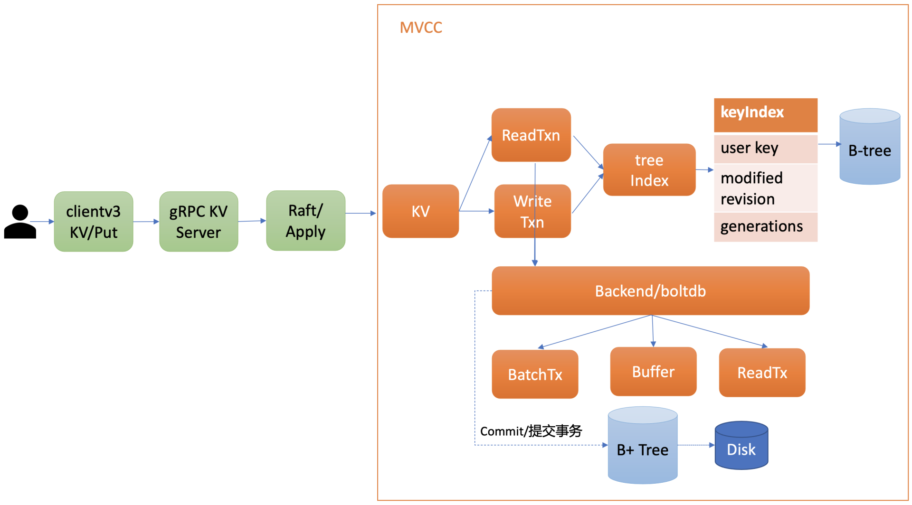
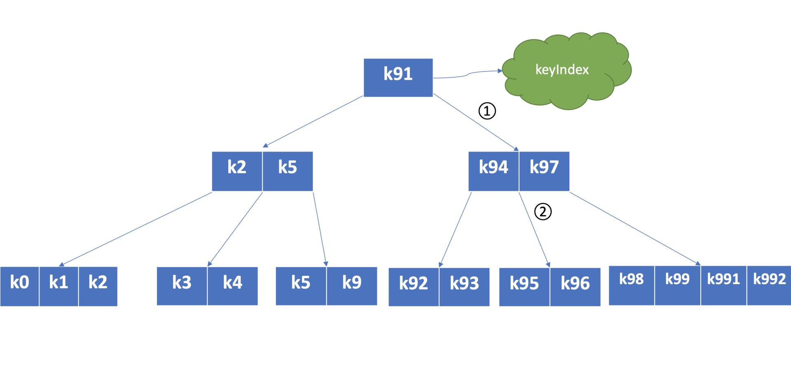
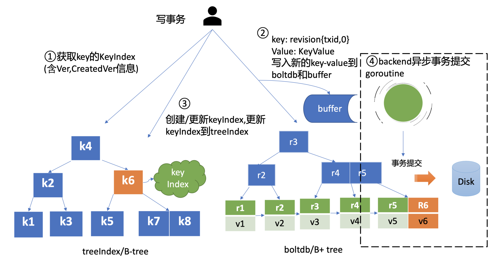
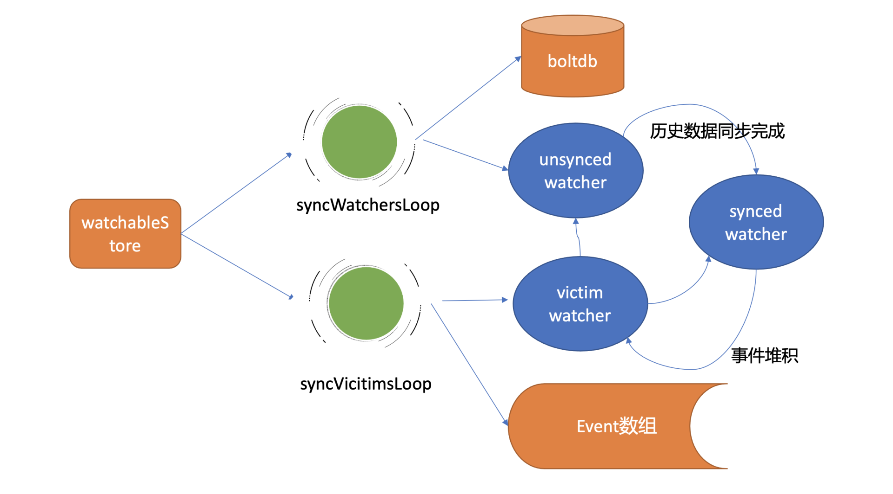
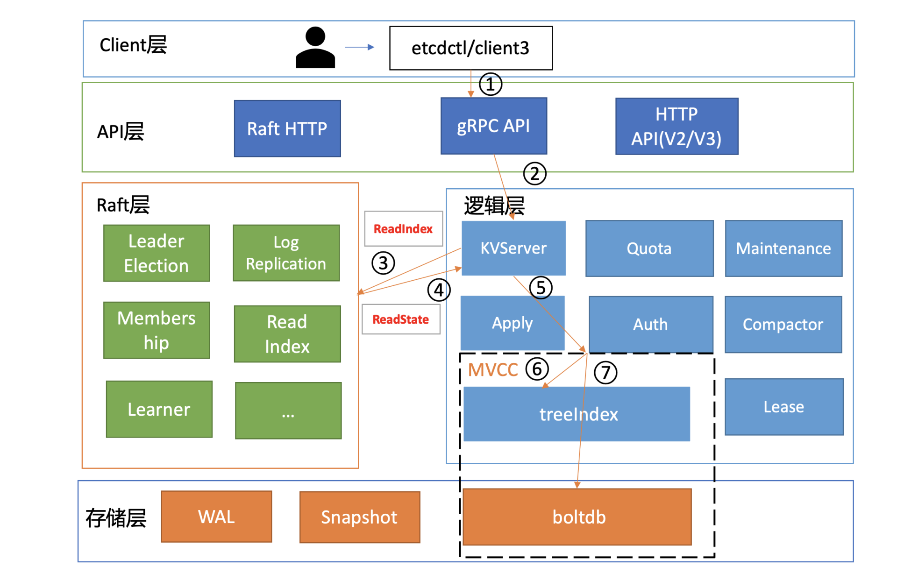

背景
Etcd作为分布式的强一致性的键值对配置库，广泛使用在元数据存储、配置存储、分布式锁等领域。其中最具代表性的有：K8s使用Etcd作为唯一的元数据后端存储，Apisix使用Etcd作为配置的后端存储。
本文通过阅读学习极客时间唐聪老师的etcd实战课，加深对Etcd的理解和使用。
内容整理
基本原理
Etcd基于Raft算法实现，在Raft的论文中，将分布式系统一致性问题分解为三个子问题，分别为Leader选举、日志复制、安全性。以下是Raft论文的中文翻译地址：
Leader选举
集群角色主要分为：
Leader，集群领导者，可以发起写操作，并同步日志给Follower，并且定时发送心跳维持自己的领导地位。
Follwer，同步从Leader接收的日志，可以处理读操作。
Candidate，竞选者，这是一个中间状态，可以发起Leader选举。
Learner，没有选举和被选举权，只能同步数据。
Leader的任期号是单调递增的，可以作为逻辑时钟，可以比较数据的新旧。 节点拒绝给当前数据比自己任期号小的节点投票。

这里有一个Precandidate的状态，是为了防止网络发生分区后，较少节点的分区，不断自增任期号，待网络恢复后，较少节点因自增任期号比较大，但数据远远落后而触发的无效节点选举，影响集群整体的稳定性。
日志复制
Leader复制日志给Follower的核心流程：

① 客户端发起请求，写入hello=world。
② Etcd首先向Raft模块，提交一个提案。消息类型为MsgProp。
③ Raft模块收到提案后，会生成日志条目，并附加到不稳定的Raft Log（内存）中。
④ Raft模块遍历Follower列表和进度信息，为每个Follower生成日志追加MsgApp消息，通过HTTP协议发送给Follower，并将日志条目持久化在WAL中。
Leader通过两个核心字段来维护Follower的进度信息：
NextIndex：Leader发送给Follower的下一个日志索引
MatchIndex：Follower已同步的日志索引
⑤ 将日志条目追加到稳定的Raft Log（内存）中。
⑥ Follower收到的消息后，首先进行安全检查，然后持久化数据到WAL中，随后回复一个应答追加日志条目（MsgAppResp）的消息，告知Leader当前已经复制到日志的最大索引（MatchIndex）。Leader收到的Follower通告MatchIndex信息后，根据这个信息推算出，半数以上节点已经持久化这条日志后，代表这条日志已经被提交。Leader可以通过心跳信息（MsgHeartbeat）告知Follwer已提交的日志索引。
⑦ 各节点从Raft模块获取到已提交的日志条目。
⑧ 应用日志条目到存储状态机中，结果返回给client。
MVCC
Etcd基于treeIndex、boltdb（B+tree）实现了存储状态机。支持多版本控制。

TreeIndex
treeIndex是一颗B-tree，每个节点包含多个数据，支持范围查询。

每个节点的Key的数据结构如下：
1 | type keyIndex struct { |
Etcd进行数据读入时，首先查询treeIndex的版本信息，这些信息在事务中发挥重要的作用，然后自增全局的版本号，生成revision{全局版本号，子版本号}，这是boltdb的key，然后填充mvccpb.KeyValue，这是boltdb的value。
先将数据保存到boltdb的缓存中（这是文件系统的缓存，等待异步刷新到磁盘），然后更新数据到buffer（保证能查询到最新的数据）中，最后更新treeIndex的数据。

数据读取与此类似，先查询的是buffer，如果未命中，才从boltdb中查询数据。
数据删除采用的是延迟删除的方式，通过新增代表删除的标志或数据结构，代表数据已被删除。
基于上述MVCC的原理，Etcd支持事务和Watch机制。
事务
Etcd通过事务API来解决多key原子更新的问题，事务API如下格式使用：
1 | client.Txn(ctx) |
Watch机制
当一个Watcher监听的版本号已经小于当前etcd Server压缩的版本号，变更的历史数据可能已丢失，etcd Server会返回ErrCompacted错误给客户端。客户端需要重新获取最新的版本好后重新watch。
syncWatcher：最新数据已同步完毕，等待新的变更。
unsyncWathcer：努力追赶历史变更。
victimWathcer：channel buffer已满，同步缓慢的watccher。
三者之间随着数据同步的进行，可以转换。

租约
Lease与key进行关联，相同TTL的Lease可以使用一个Lease。Leader按照过期时间维护了一个最小堆。主循环每次获取过期的lease，发起Revoke请求，通过Raft Log 传递给Follower节点，删除boltdb中已过期的key、删除Lease和Key的关联，删除Lease。
压缩
为防止Etcd的db不断增长，达到上限8G，需要进行压缩，清除历史数据。压缩分为：
手动压缩，etcdctl compact。
自动压缩：
周期压缩，保留时间周期
版本号压缩
压缩操作并不会直接释放磁盘，减小db的大小，而是会将释放的page，记录在空闲页中，等待新的写入请求，复用这个page。
一次写请求

（1）Client通过负载均衡算法选择一个节点，封装并发送gRPC请求。
（2）请求通过gRPC拦截器、Quota模块后，交给KV Server后，KV Server会生成一个提案（Propose）提交给Raft模块，随后会等待这个这个提案的返回。
如果超时（5 秒磁盘 IO 延时 +2*1 秒竞选超时时间）未返回，会报etcdserver：request time out。
（3）Raft模块收到提案后，如果是Follower，它会转发给Leader节点。
Leader节点收到提案后，Leader将提案消息广播给集群个节点，同时需要将集群Leader任期号、投票信息、已提交索引、提案内容持久化（fsync）到WAL日志文件中，并附建。
WAL的记录类型：
文件元数据记录
日志条目记录
状态信息记录
CRC记录
快照记录
（4）当一半以上的节点持久化了日志条目后，Raft通过channel告知etcdserver模块，提案状态为已提交，可以异步进行Apply。
（5）Apply模块通过consistent index来实现日志条目执行的幂等性，Apply判定日志未执行后，交给MVCC进行持久化。
（6）MVCC通过维护treeindex和boltdb来实现提案的提交，注意这里的只是更新内存中的数据结构，并没有实现真正的事务提交。
通过bucket buffer来保存暂未提交的事务数据，解决读不到最新数据的问题。
（7）事务的提交过程包括B+tree的平衡分裂、合并多个写操作等，通过异步定时批量地fsync刷新数据到磁盘。
一次读请求

（1）Client通过负载均衡算法选择一个节点，封装gRPC请求给KV Server。
（2）ETCD会通过拦截器提供metrics、日志、请求行为检查等机制。随后将请求交给KV Server来处理。
（3）如果是线性一致性（默认），则KV Server首先通过Raft模块到Leader中获取当前最新已提交的日志索引（committed index）。这里leader也需要向Follwer确认自己的Leader身份。
（4）查询的节点，需要等待直至自身状态机的applied index大于等于Leader的已提交索引（committed index），然后才去MVVC模块获取数据。
（5）MVVC模块获取数据时，首先查询treeIndex获取版本号，然后在未命中buffer的情况下， 才到boltdb中读取实际存储的数据。
以上是线性读的处理流程，如果是序列化一致性，则不需要readIndex机制（上文中(3)(4)的步骤）来保证数据一致性。
组件运维
集群发现
Etcd集群发现，可以采用如下两种方式：
（1）static configuration
initial-cluster-state=new，initial-cluster包含三个节点的信息。
initial-cluster-state=new，单个节点独立成集群，然后其它节点为existing，加入到集群中。
（2）dynamic service discovery
通过公共服务来发现集群中的成员信息。
集群成员变更
集群成员在线安全变更的方式为：每次变更一个节点，不要同时变更多个节点。
监控告警
通过Etcd暴露的Metrics指标，监控磁盘、网络、MVCC事务、Etcd Server等信息。
备份还原
（1）etcdctl snapshot
（2）定时备份，etcd-backup-operator
（3）跨地域热备，learner节点
巡检
混沌工程
快速复现故障实现问题定位。
问题分析
内存
Etcd的内存占用：
（1）raft log
1 | type raftLog struct { |
（2）treeIndex
（3）boltdb
通过 mmap将db文件预读取到内存中。
（4）watcher
连接
Stream
watcher。
（5）expensive request
延时
对于网络或者是磁盘的延时，可以通过接入监控，分析etcd暴露的指标来得出结论，也可以开启trace日志。
expensive request、容量瓶颈、节点配置。